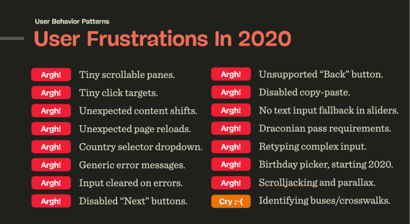
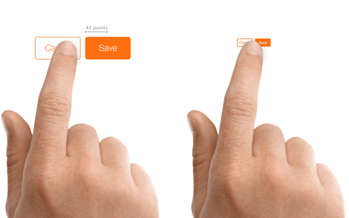

Top 10 User Frustrations on Web
And how to fix (most of) them.
What are the most frustrating things that you face on the web today? Vitaly Friedman of Smashing Magazine did a great job summarizing all key user frustrations in 2020.
In this article, I want to overview my list of the ten most critical frustrations and share practical tips on how to overcome them:
1. Small-sized text
Despite the recent popularity of video format, most information on the web is still in written form. That’s why
In this article, I want to overview my list of the ten most critical frustrations and share practical tips on how to overcome them:
Here are a few practical tips for you to follow when working with text:
- Font size should be minimum 16px. 16px for body text is a good place to start but remember that the bigger the screen size, the larger the text.
- Aim for line-height to be 1.5em or 1.6em for optimal readability.
- Always view your designs on an actual device.
2. Tiny click targets
The smaller the interactive elements (links, buttons, and other UI controls), the more mistakes the user will make when interacting with your website.
Do not play ‘hunt a button’ game with your visitors.
Here are a few good tips:
- Touch targets should be finger-friendly. The average size of the touch target should be 9mm x 9mm. Material Design states that touch targets should be at least 48 x 48 px.
- Add good padding surrounding touch targets. Microsoft guidelines recommend 10mm paddings between touch targets.
5. Not working “Back” button
User control and freedom is one of Jakob Nielsen’s 10 usability heuristic of user interface design. It says:
Users need a clearly marked “emergency exit” to leave the unwanted action without having to go through an extended process.
And the Back button in a browser is this emergency exit. If you are afraid that users will lose their data by clicking the Back button, it’s better to warn users about that by displaying a message “Your work will be lost"on the Back button click.
window.addEventListener("beforeunload", function(event) { ... });
window.onbeforeunload = function(event) {
// notify about potential data loss here
};
- Font size should be minimum 16px. 16px for body text is a good place to start but remember that the bigger the screen size, the larger the text.
- Aim for line-height to be 1.5em or 1.6em for optimal readability.
- Always view your designs on an actual device.
And the Back button in a browser is this emergency exit. If you are afraid that users will lose their data by clicking the Back button, it’s better to warn users about that by displaying a message “Your work will be lost"on the Back button click.